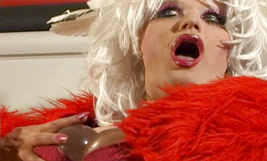
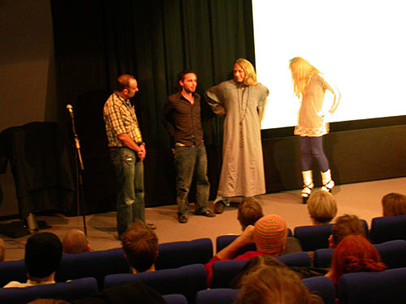
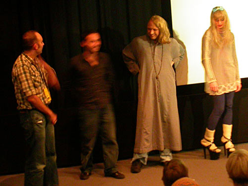
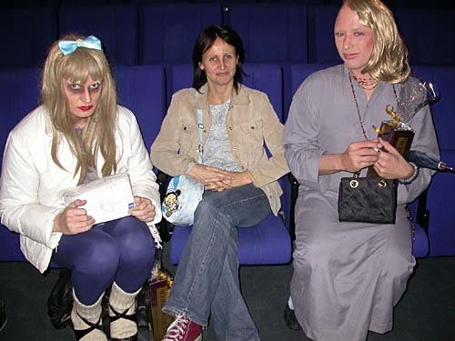

See the film "Ramonas rejse" With Ramona Macho & Dennis Agerblad. |

| 'Ramonas rejse' er en
af 3 film som vises lørdag 23 Oktober, kl. 16.30 til arrangementet
'Grænselandet mellem to køn'. Arrangementet er gratis men der SKAL bestilles billetter. |

Efter filmen vil der være mulighed for at stille spørgsmål til instruktøren Simon Lereng
Wilmont samt Ramona Macho og Dennis Agerblad som medvirker i filmen.


Dennis Agerblad, Unni & Ramona Macho.
Filmen blev også vist til Sneekbar i Filmhuset 4. + 16. + 29. Juni - 2004